- Manifesto
- Sobre
- Serviços
- Clientes
- Noticias
.jpg)
Licenciamento Ambiental
Cadastro Ambiental Rural: CAR é uma ferramenta fundamental e obrigatória para promover a regularização ambiental de propriedades rurais, sendo um instrumento previsto pelo Código Florestal Brasileiro. Este registro visa mapear e monitorar as áreas de preservação permanente, as reservas legais, e demais elementos ambientais presentes na propriedade.
Plano de Gerenciamento de Resíduos Sólidos (PGRS)
O Plano de Gerenciamento de Resíduos Sólidos (PGRS) é um documento que define diretrizes de gerenciamento ambiental adequado de todos os resíduos que são gerados no estabelecimento, determinando estratégias de controle e monitoramento dos processos produtivos, visando evitar descartes/destinações inadequadas que possam gerar poluição ao meio ambiente e acarretar prejuízos à saúde pública e sanções legais.
Plano de Gerenciamento de Risco (PGR): Licenciamento Ambiental
O Programa de Gerenciamento de Riscos é uma abordagem sistemática e estruturada para identificar, avaliar, controlar e monitorar os riscos que uma organização pode enfrentar em suas operações. O principal objetivo desse programa é minimizar as ameaças potenciais e maximizar as oportunidades, garantindo a sustentabilidade e a continuidade das atividades empresariais.
Monitoramento de Fauna e Flora: Licenciamento Ambiental
O monitoramento de fauna e flora é uma prática vital que busca coletar dados sobre as populações de animais e plantas ao longo de determinado tempo. Essa abordagem é crucial para a conservação da biodiversidade, avaliação de impactos ambientais, planejamento sustentável, identificação de espécies ameaçadas e compreensão dos ecossistemas.
Gestão de Riscos na cadeia de fornecedores: Avaliação de Riscos
A Avaliação de Risco é base para garantir que as empresas cumpram suas obrigações regulatórias e aprimorem suas ações em todos os aspectos: éticos e sociais, ambientais e econômicos. Realizar a avaliação de riscos na cadeia de fornecedores possibilita a identificação de potenciais violações regulatórias, ambientais e sociais que possam causar danos a organização.
- Licenciamento Ambiental
- Cadastro Ambiental Rural : CAR é uma ferramenta fundamental e obrigatória para promover a regularização ambiental de propriedades rurais, sendo um instrumento previsto pelo Código Florestal Brasileiro. Este registro visa mapear e monitorar as áreas de preservação permanente, as reservas legais, e demais elementos ambientais presentes na propriedade.
- Como Podemos ajudar :
- 1. Adequação à Legislação: Orientamos sobre as normativas vigentes, garantindo que o CAR esteja em conformidade com as exigências legais.
- 2. Acompanhamento do Processo: Oferecemos suporte contínuo durante o processo de cadastramento, esclarecendo dúvidas e facilitando a comunicação com os órgãos ambientais.
- 3. Preservação Sustentável: Destacamos a importância do CAR na promoção da sustentabilidade e na preservação do meio ambiente, cumprindo as obrigações legais e contribuindo para a conservação da biodiversidade.
- Plano de Gerenciamento de Resíduos Sólidos (PGRS)
- 1. Diagnóstico: Conduzimos diagnósticos detalhadas para entender a natureza exclusiva de suas operações e identificar as melhores
- 2. Desenvolvimento Estratégico: Elaboramos PGRS sob medida, incorporando estratégias de redução, reutilização e reciclagem para minimizar o impacto ambiental e otimizar a eficiência operacional.
- 3. Conformidade Legal: Garantimos que seu PGRS esteja em total conformidade com as regulamentações ambientais.
- 4. Eficiência Operacional: Nosso foco vai além da conformidade; trabalhamos para otimizar processos e reduzir custos operacionais, resultando em uma gestão de resíduos mais eficaz.
- 5. Compromisso Contínuo: Oferecemos suporte contínuo para ajustar e aprimorar seu PGRS, garantindo que sua empresa permaneça na vanguarda da gestão de resíduos de forma sustentável.
- Plano de Gerenciamento de Risco (PGR): Licenciamento Ambiental
- 1. Diagnóstico: Conduzimos diagnósticos detalhadas para entender a natureza exclusiva de suas operações e identificar as melhores
- 2. Desenvolvimento Estratégico: Elaboramos PGRS sob medida, incorporando estratégias de redução, reutilização e reciclagem para minimizar o impacto ambiental e otimizar a eficiência operacional.
- 3. Conformidade Legal: Garantimos que seu PGRS esteja em total conformidade com as regulamentações ambientais.
- 4. Eficiência Operacional: Nosso foco vai além da conformidade; trabalhamos para otimizar processos e reduzir custos operacionais, resultando em uma gestão de resíduos mais eficaz.
- 5. Compromisso Contínuo: Oferecemos suporte contínuo para ajustar e aprimorar seu PGRS, garantindo que sua empresa permaneça na vanguarda da gestão de resíduos de forma sustentável.
- Monitoramento de Fauna e Flora: Licenciamento Ambiental
- 1. Análise Detalhada: Conduzimos análises abrangentes para compreender a diversidade biológica, conforme necessidade de seu negócio.
- 2. Tecnologia de Ponta: Utilizamos tecnologias avançadas, como sensores remotos e sistemas de monitoramento, para coletar dados precisos sobre a biodiversidade.
- 3. Conservação Proativa: Desenvolvemos estratégias de conservação que não apenas identificam espécies e ecossistemas, mas também implementam medidas proativas para preservar e proteger a biodiversidade.
- 4. Compromisso com a Sustentabilidade: Vamos além do simples monitoramento, integrando resultados em estratégias de desenvolvimento sustentável.
- Gestão de Riscos na cadeia de fornecedores : Avaliação de Riscos
- 1. Avaliação: Nossa abordagem de avaliação estende-se profundamente à cadeia de fornecedores, enfatizando a importância de integrar práticas sustentáveis e responsáveis em todos os níveis de operação. Analisamos meticulosamente a conformidade dos fornecedores com os padrões ambientais e sociais estabelecidos, incluindo a gestão de resíduos, o uso responsável de substâncias químicas, a prevenção de contaminação e a mitigação de impactos ambientais. Além disso, avaliamos rigorosamente o compromisso dos fornecedores com os direitos humanos, saúde e segurança no trabalho, e a qualidade do engajamento com as partes interessadas.
- 2. Metodologia: A metodologia utilizada na avaliação de riscos associadas a cadeia de fornecedores é baseada no Committee of Sponsoring Organizations of the Treadway Commission (COSO). Na qual contempla três etapas: - Identificação de riscos: Identificação de eventos que possam afetar negativamente a organização. - Avaliação de riscos: Análise da probabilidade e do impacto desses eventos. - Resposta aos riscos: Desenvolvimento e implementação de estratégias para mitigar ou aceitar os riscos identificados
- 3. Conformidade Legal: Garantimos que seu PGRS esteja em total conformidade com as regulamentações ambientais.
- 4. Eficiência Operacional: Nosso foco vai além da conformidade; trabalhamos para otimizar processos e reduzir custos operacionais, resultando em uma gestão de resíduos mais eficaz.
- 5. Compromisso Contínuo: Oferecemos suporte contínuo para ajustar e aprimorar seu PGRS, garantindo que sua empresa permaneça na vanguarda da gestão de resíduos de forma sustentável.
- Avaliação de Riscos Socioambientais : Avaliação de Riscos
- Como Podemos Ajudar: A Avaliação de Riscos Socioambientais é um processo essencial no campo dos negócios e investimentos, envolvendo a análise aprofundada dos impactos sociais e ambientais de uma determinada atividade, projeto ou transação comercial. Essa prática visa identificar, avaliar e mitigar potenciais riscos que possam surgir, assegurando que as operações estejam alinhadas com critérios éticos, sociais e ambientais.
- 1. Identificação de Impactos Potenciais: A avaliação de risco socioambiental permite identificar os possíveis impactos negativos que uma atividade ou projeto pode ter sobre o meio ambiente, os recursos naturais e as comunidades locais. Isso inclui a análise dos riscos à saúde, segurança, meios de subsistência e bem-estar das populações afetadas.
- 2. Prevenção de Danos: Ao antecipar os possíveis impactos negativos, a avaliação de risco socioambiental ajuda a implementar medidas preventivas e mitigatórias para minimizar danos ao meio ambiente e às comunidades. Isso pode incluir a adoção de tecnologias mais limpas, práticas sustentáveis e medidas de compensação.
- 3.Tomada de Decisões Informada: Os resultados da avaliação de risco socioambiental fornecem informações importantes para tomadores de decisão, permitindo que eles avaliem os benefícios e os custos de uma atividade ou projeto, considerando os aspectos sociais, econômicos e ambientais envolvidos.
- 4. Relacionamento com comunidades: Ao envolver as comunidades afetadas desde o início e considerar suas preocupações e interesses na avaliação de risco socioambiental, as organizações podem construir confiança e legitimidade para seus projetos. Isso pode ajudar a evitar conflitos, resistência local e litígios futuros.
- 5. Mudanças Climáticas: Avaliar os riscos específicos associados às mudanças climáticas, como eventos climáticos extremos, escassez de recursos naturais e regulamentações mais rigorosas, auxiliando as organizações a compreenderem as suas vulnerabilidades e a planejarem medidas de mitigação apropriadas
- Diagnósticos socioambientais e econômicos: Avaliação de Riscos
- Ao proporcionar uma visão holística, os Diagnósticos Socioambientais e Econômicos oferecem não apenas uma compreensão aprofundada dos impactos, mas também uma base sólida para o desenvolvimento de estratégias que promovam a sustentabilidade. Essa abordagem informada é essencial para tomadas de decisões que busquem o equilíbrio entre o crescimento econômico, a responsabilidade social e a preservação ambiental, promovendo um desenvolvimento verdadeiramente sustentável.
- 1. Compreensão do Contexto: compreensão profunda das características e dinâmicas sociais e econômicas de uma população ou área geográfica específica.
- 2. Identificação de Problemas e Potencialidades: Ajudamos na identificação dos principais desafios, necessidades, oportunidades e recursos disponíveis em uma determinada região.
- 3. Avaliação de Impacto: Analisamos o impacto de políticas, programas e projetos já em execução, destacando tanto suas áreas de sucesso quanto as necessidades de ajuste identificadas
- 4. Engajamento e Participação Comunitária: Estimulamos o envolvimento e a participação ativa das comunidades no processo de tomada de decisões, promovendo a inclusão e a participação cidadã.
- 5. Monitoramento e Avaliação: Conduzimos monitoramento e avaliação contínuos dos indicadores socioeconômicos ao longo do tempo, possibilitando ajustes e adaptações conforme demandado.
- Inventario de gases de efeito estufa: Gestão de Gases
- O inventário de gases de efeito estufa é um mapeamento das emissões e remoções desses gases por atividades humanas, essencial para compreender e mitigar o impacto no clima. Ele ajuda na criação de políticas e estratégias para reduzir emissões, monitorando o progresso das metas estabelecidas. A metodologia para elaboração desses inventários é padronizada por diretrizes internacionais, facilitando a consistência e comparabilidade dos dados globalmente.
- 1. Avaliação Precisa: Conduzimos avaliações detalhadas para mensurar com precisão as emissões de gases de efeito estufa associadas às suas operações, adaptando nossas abordagens à singularidade e complexidade da sua empresa.
- 2. Identificação de Fontes: Detectamos as fontes específicas de emissões, proporcionando uma compreensão detalhada de onde essas emissões originam-se e de quais são as vias para sua redução.
- 3. Estratégias de Redução: Desenvolvemos estratégias eficazes para a redução das emissões, indo além da simples mensuração e abordando soluções práticas para mitigar os impactos ambientais.
- 4. Compromisso com a Neutralidade de Carbono: Guiamos empresas em direção a metas ambiciosas, como a neutralidade de carbono, desenvolvendo planos de ação para compensação e redução de emissões.
- 5. Relatórios Transparentes: Oferecemos relatórios transparentes que comunicam de forma clara, aderindo às metodologias mais adequadas e de acordo com as necessidades das partes interessadas.
- 6. Sustentabilidade Integrada: Integramos o Inventário de GEE em estratégias mais amplas de sustentabilidade, garantindo que a gestão das emissões seja parte integrante do compromisso ambiental da sua empresa.
- Calculo de remoção e estoque de carbono florestal: Gestão de Gases
- O cálculo de estoque e remoção de carbono em florestas envolve medir o carbono armazenado nas árvores e no solo, e quantificar o carbono absorvido pelas florestas ao crescerem. Utiliza-se coleta de dados, modelos, imagens de satélite e/ou inventários florestais, para estimar esses valores. Esse processo ajuda a entender o papel das florestas na mitigação das mudanças climáticas e informa estratégias de conservação e reflorestamento.
- 1. Avaliação Detalhada: Realizamos avaliações precisas para calcular a remoção e o estoque de carbono em suas áreas florestais, adaptando nossas abordagens à biodiversidade e dinâmica únicas de suas florestas.
- Relatórios Transparentes: Oferecemos relatórios transparentes que comunicam de forma clara, aderindo às metodologias mais adequadas e de acordo com as demandas das partes interessadas.
- Licenciamento para intervenção em APP: Licenciamento Ambiental
- O licenciamento para intervenções em Áreas de Preservação Permanente (APP) é regulado pelo Código Florestal e envolve a identificação da APP, realização de estudos ambientais, solicitação de licenciamento ao órgão ambiental competente (federal, estadual ou municipal), avaliação do projeto pelo órgão, e, se aprovado, emissão das licenças necessárias. O processo inclui medidas mitigadoras e compensatórias para minimizar e reparar impactos ambientais, garantindo uma abordagem responsável à gestão ambiental e à conservação dos recursos naturais.
- 1. Análise Especializada: Realizamos análises especializadas para compreender os impactos específicos da intervenção proposta em APP, adaptando nossas abordagens às características únicas de cada área.
- 2. Assessoria no Processo de Licenciamento: Oferecemos orientação e acompanhamento especializada para sua empresa durante o processo de obtenção do licenciamento, assegurando a conformidade com as regulamentações pertinentes e buscando otimizar a eficiência e a sustentabilidade da intervenção proposta.
- 3. Minimização de Impactos: Desenvolvemos estratégias para minimizar os impactos da intervenção, priorizando a conservação de ecossistemas sensíveis e a promoção de práticas responsáveis.
- Certificações
- As certificações de qualidade, saúde, segurança e meio ambiente são essenciais para as organizações, pois estabelecem padrões de operação sustentáveis, promovem melhorias contínuas, garantem a segurança dos colaboradores e reduzem impactos ambientais e sociais. Elas também elevam a credibilidade e competitividade da empresa no mercado.
- 1. ISO 9001, ISO 14001, ISO 45001: • Desenvolvimento e implementação do sistema de gestão integrado para assegurar processos eficazes. • Treinamento personalizado para garantir total compreensão e conformidade com os requisitos das normas ISO. • Auditorias internas para assegurar a conformidade com padrões reconhecidos, identificar melhorias, prevenir não conformidades e avaliar a eficácia dos sistemas de gestão.
- 2. FSC (Forest Stewardship Council): Manejo e Cadeia de Custódia • Apoio especializado para implementação de práticas responsáveis de manejo florestal, assegurando a conformidade com os padrões exigentes do FSC. • Realização de auditorias internas de conformidade para garantir que as práticas atendam integralmente aos requisitos da norma. • Acompanhamento do processo de certificação junto aos organismos certificadores até a emissão do certificado.
- 3. PEFC (Programme for the Endorsement of Forest Certification): • Apoio especializado para implementação de práticas responsáveis de manejo florestal, assegurando a conformidade com os padrões exigentes do PEFC. • Realização de auditorias internas de conformidade para garantir que as práticas atendam integralmente aos requisitos da norma. • Acompanhamento do processo de certificação junto aos organismos certificadores até a emissão do certificado.
- Estratégia de Comunicação ESG : ESG
- A comunicação eficaz das iniciativas de ESG é crucial para empresas, pois melhora a transparência, fortalece a confiança das partes interessadas, engaja funcionários internamente e eleva a reputação corporativa externamente. Isso atrai investidores e clientes alinhados com valores sustentáveis, diferenciando a empresa no mercado e contribuindo para seu sucesso sustentável.
- 1. Matriz de Materialidade: • Elaboramos a Matriz de Materialidade para identificar e priorizar os temas mais relevantes e impactantes para sua empresa. • Integração de consultas a partes interessadas, garantindo uma visão abrangente das expectativas e preocupações relacionadas aos temas ESG (Environmental, Social and Governance).
- 2. Relatório de Sustentabilidade GRI (Global Reporting Initiative): • Elaboração de relatórios de sustentabilidade alinhados aos padrões da GRI, fornecendo uma visão holística do desempenho ambiental, social e econômico. • Implementação de indicadores-chave de desempenho (KPIs) para medir e comunicar de forma eficaz o impacto sustentável da sua empresa.
- 3. Estratégia de Comunicação interna e externa: • Desenvolvemos a estratégia de comunicação interna e externa com foco nas informações das ações ESG pertinente as atividades de sua organização para melhoria da imagem, reputação e atendimento as demandas das partes interessadas. • Aprimoramento do treinamento de colaboradores internos, visando transformá-los em embaixadores da marca com foco em ESG, capacitando-os a disseminar os valores de sustentabilidade, responsabilidade social e governança corporativa como porta-vozes eficazes. • Apoiamos a organização na otimização da gestão de informações e conhecimentos vinculados a ESG, aprimorando a eficiência organizacional e a capacidade de responder às expectativas das partes interessadas de maneira assertiva.
- Autorização para Supressão de Vegetação (ASV): Licenciamento Ambiental
- A autorização para supressão de vegetação é um requisito legal para a remoção controlada de vegetação em projetos, exigindo aprovação de órgãos ambientais após avaliação de impacto. Requer estudos justificativos e medidas de mitigação, como reflorestamento, visando harmonizar desenvolvimento econômico com conservação ambiental e uso sustentável dos recursos naturais.
- 1. Análise Especializada: Realizamos análises especializadas para compreender os impactos específicos da supressão de vegetação proposta, adaptando nossas abordagens às características únicas de cada área.
- 2. Orientação no Processo de Autorização: Assessoramos sua empresa no processo de obtenção da autorização, assegurando a conformidade com as regulamentações pertinentes.
- 3. Minimização de Impactos: Desenvolvemos estratégias para minimizar os impactos da supressão, priorizando a conservação de ecossistemas sensíveis e a promoção de práticas responsáveis.
- 4. Compromisso com a Biodiversidade: Destacamos o compromisso com a biodiversidade, implementando medidas que vão além da conformidade, visando à preservação de espécies e ecossistemas associados às áreas de intervenção.
- 5. Relatórios Transparentes: Fornecemos relatórios transparentes que documentam não apenas o processo de autorização, mas também as iniciativas e práticas implementadas para garantir o uso responsável e sustentável dessas áreas.
- Relatório Ambiental Simplificado (RAS): Licenciamento Ambiental
- O Relatório Ambiental Simplificado (RAS) é uma ferramenta crucial no processo de licenciamento ambiental para projetos com impacto ambiental reduzido, agilizando a análise dos efeitos sobre o meio ambiente e recomendando medidas de mitigação pertinentes.
- 1. Coleta de Dados Precisa: Realizamos coleta de dados detalhada para garantir a precisão das informações apresentadas no RAS, adaptando nossa abordagem às especificidades de suas operações.
- 2. Análise Transparente: Oferecemos análises claras e transparentes sobre o desempenho ambiental de sua empresa, ressaltando não apenas as conquistas, mas também identificando áreas passíveis de aprimoramento.
- 3. Compromisso com Metas Ambientais: Destacamos seu compromisso com metas ambientais, evidenciando iniciativas e práticas que vão além do que é estritamente exigido pelas regulamentações.
- 4. Divulgação de Iniciativas Sustentáveis: Incluímos em seu RAS informações sobre iniciativas sustentáveis implementadas, ressaltando seu papel na promoção da responsabilidade ambiental.
- Termo de Compromisso de Recuperação Ambiental (TCRA): Licenciamento Ambiental
- O Termo de Compromisso de Recuperação Ambiental (TCRA) é um instrumento legal que formaliza o compromisso de uma parte responsável pela degradação ambiental em adotar medidas específicas para recuperar a área afetada. Ele estabelece obrigações claras, prazos, metas e ações de recuperação, sendo firmado entre o degradador e o órgão ambiental competente. O TCRA tem como objetivo garantir que os impactos ambientais negativos sejam mitigados ou reparados de acordo com as diretrizes legais e técnicas estabelecidas.
- 1. Avaliação Detalhada: Realizamos avaliações minuciosas para compreender os impactos ambientais específicos associados às suas operações, adaptando nossas abordagens às características únicas de cada local afetado.
- 2. Desenvolvimento de Estratégias: Elaboramos estratégias de recuperação personalizadas, considerando não apenas a conformidade com regulamentações, mas também a promoção da restauração efetiva do ambiente degradado.
- 3. Acompanhamento: Apoio técnico através de consultores com conhecimento em legislação ambiental auxiliando na negociação dos termos do TCRA, garantindo que os compromissos sejam realistas e alinhados com as capacidades do responsável pela degradação.
- PRADA: Licenciamento Ambiental
- 1. Diagnóstico Detalhado: Conduzimos diagnósticos em sua propriedade para avaliar as ações necessárias visando à conformidade ambiental, conforme as regulamentações vigentes.
- 2. Desenvolvimento Estratégico: Desenvolvemos estratégias de recuperação personalizadas que não apenas atendem às questões ambientais, mas também fortalecem a viabilidade econômica, buscando um equilíbrio sustentável entre as atividades comerciais e as preocupações ambientais.
- 3. Relatórios Transparentes: Fornecemos relatórios transparentes que não apenas documentam o processo de adequação, mas também acompanham o progresso contínuo, fortalecendo, dessa forma, a responsabilidade e o compromisso legal.
- 4. Integração com Práticas Sustentáveis: Integramos o Plano de Recuperação de Áreas Degradadas (PRADA) a práticas empresariais sustentáveis mais abrangentes, evidenciando como a restauração de áreas degradadas se converte em componente essencial do compromisso ambiental de sua empresa ou propriedade.
